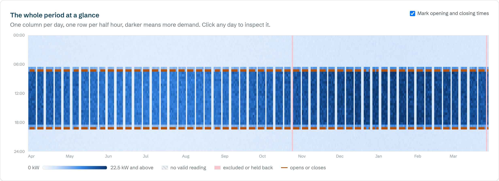

See the kind of results the analyser produces before you find your own meter data. This is a made-up office with made-up readings.
Made-up example. The office and its meter readings are invented, so nothing here is a real customer's result. Every figure is what the analyser reports for our example file, at an illustrative 25p/kWh.
This made-up office used 79,191 kWh of electricity in a year, costing about £19,798 at 25p/kWh. A third of it (33%) was used while the office was closed. Use above the base load during those closed hours costs about £2,776 a year, almost half of it on Saturdays.
The year at a glance
A small office, open 07:00 to 19:00 on weekdays, with 363 days of valid readings.
79,191 kWhelectricity used in the year, costing about £19,798
33%of it used while the office was closed
2.6 kWbase load: what never switches off
£2,776a year spent on use while closed, above the base load

Every half hour of the year on one chart: one column per day, darker for higher demand. The weekday band is clear, and some Saturdays are as busy as weekdays.
What the analyser found
High impact
Use while closed
£2,776 a year
11,035 kWh used outside opening hours, above the base load. Almost half of it (5,155 kWh) is on Saturdays; weekday evenings and nights add 3,750 kWh.
What to check: whether the office is used on Saturdays, and the heating and ventilation schedules.
Medium impact
Bank holidays like working days
7 bank holidays
Seven bank holidays, including Christmas Day, used at least 80% of a normal weekday's electricity (1,408 kWh above base load in all).
What to check: whether the building controls know about bank holidays.
Already included in the £2,776.
Low impact
Early starts and late finishes
£629 a year
About 1,250 kWh above base load in the two hours before opening, and the same again in the two hours after closing.
What to check: timer and heating start-up settings.
Already included in the £2,776.
The smaller findings are parts of the £2,776, not extra to it, so don't add them up. The base load is separate: 2.6 kW running all year costs about £5,700.
What could actually be saved?
The figures above are what each pattern costs now. They are not a promised saving. What you save depends on what you change, and some of that closed-hours use may turn out to be needed, such as a regular Saturday team. The way to find out is to:
Confirm the opening hours. If Saturdays are planned working days, much of the £2,776 is normal use.
Walk round the building on a Saturday and after closing time, and note what's switched on.
Change one setting at a time, such as the heating schedule or bank holiday calendar.
Compare the weeks before and after with the analyser's before-and-after view. That gives you a measured saving rather than an estimate.